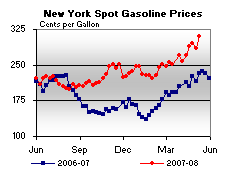

Released on May 14, 2008
(Next Release on May 21, 2008)
Oil as a Primary Space Heating Fuel: Historical Trends
Two weeks ago, EIA released the 2005 Residential Energy Consumption Survey (RECS) housing characteristics data. The RECS is done every four years and provides information on the use of energy in residential housing units in the United States. The latest data shows that the number of households using distillate fuel oil (also known as heating oil) for their main space heating fuel has declined steadily from its peak of 17.2 million homes in 1973. By 1980, EIA estimated that 13.4 million homes (16 percent) of U.S. homes were heating with fuel oil; 8.2 million were in the Northeast Census Region, which comprises the New England and Middle Atlantic Census Divisions. Data from the 2005 Residential Energy Consumption Survey (RECS) now show the number of U.S. homes heating with fuel oil has fallen by more than half to 7.7 million homes (6.9 percent of the U.S.). The Northeast Census Region accounts for 81 percent of all homes that use fuel oil for main space heating (up from 61 percent in 1980). Although 2 million fewer homes used fuel oil in the Northeast Region in 2005 than in 1980, it remains a critical fuel for that area; 6.2 million or 30 percent of all Northeast homes rely on fuel oil to heat their homes in winter.
Factors contributing to the decrease in fuel oil use include both homebuilder and consumer preferences for alternatives. In the South and West Census Regions, more new housing has been built with heating systems that use other fuel types, particularly electricity. The increasing availability of fuels other than fuel oil also makes fuel substitution for existing systems possible. For example, in the Northeast Census Region, about 7.8 million more homes in 2005 than in 1990 were located in neighborhoods where natural gas is available, although not always used. In 2005, a total of 15.6 million homes had natural gas available in Northeast neighborhoods; of those, about 13.6 million used gas for any purpose. Two million who had access did not use gas at all, and about 200,000 used it only for uses other than space heating, such as cooking or water heating. This suggests a potential for more use of natural gas for space heating, but over the years, this residual has been consistently small and stable.
The decline in fuel oil use is reflected in consumer choice, especially by homeowners in the Northeast. Since 1990, there have been 2 million more natural gas and 200,000 fewer fuel oil central warm-air furnace systems. During the same period, about 200,000 more Northeast households used natural gas in steam or hot water heating systems and 1.1 million fewer used fuel oil.
Although fewer homes are using fuel oil, especially in the South, the Midwest, as well as the Northeast Census Regions, other factors are affecting overall consumption for space heating. Since 1990, there are more than 17 million new housing units in the U.S. About 13.7 million are single family homes which are larger and house fewer people than in 1990. These factors partially offset improvements in energy intensities per household, per capita and per square foot resulting from efficiency gains of new appliance standards. Each time a RECS survey has been conducted, about a third of the heating systems are consistently fewer than ten years old.
U.S. Average Gasoline and Diesel Prices Surge to New Highs
The U.S. average retail price for regular gasoline jumped to yet another all-time high as the price increased by 10.9 cents to 372.2 cents per gallon. This was the seventh consecutive week where the price rose, with the cumulative increase totaling 46.3 cents. On a regional basis, prices increased throughout the country with the East Coast swelling by 10.3 cents to 371.3 cents per gallon, some 73.2 cents above the price a year ago. The average price in the Midwest was 373.6 cents per gallon, surging up by 15.7 cents, the largest increase for any region. The average price in the Gulf Coast went up by 10.9 cents to 361.6 cents per gallon. While the price in the Rocky Mountain region increased by 11.5 cents to 360.9 cents per gallon, the price remained the lowest for any region. The West Coast prices are the highest in the nation but had the smallest increase of any region, moving up by 3.3 cents to 383.3 cents per gallon. The average price in California increased by 1.6 cents to reach 391.9 cents per gallon.
Registering the third largest one-week increase, the U.S. average price for diesel reached another new record of 433.1 cents per gallon, up by 18.2 cents this week and 155.8 cents higher than a year ago. The average price on the East Coast increased by 18.3 cents to 437.7 cents per gallon, 161.9 cents higher than a year ago. In the Midwest, the price surged by 19.7 cents (the largest increase of any region) to 429.8 cents per gallon. The average price in the Gulf Coast remained the lowest of any region, but still increased by 18.4 cents to 426.8 cents per gallon. The Rocky Mountain region had the smallest increase of any region, rising by 12 cents per gallon to 427.6 cents per gallon. On the West Coast, the average price jumped by 15.1 cents to hit 445.4 cents per gallon. In California, the average price swelled 16.5 cents to 454.7 cents per gallon.
Propane Inventories Continue Strong Build
Primary inventories of propane continued to show a strong seasonal build last week with a gain of 1.5 million barrels, boosting inventories higher to an estimated 31.3 million barrels as of May 9, 2008. Despite the strong stockbuild last week, regional activity was mixed, with inventories down in the East Coast by 0.3 million barrels while rising in the Midwest and Gulf Coast regions by 0.8 million barrels and 0.9 million barrels, respectively. The combined Rocky Mountain/West Coast region remained unchanged during this same time. Propylene non-fuel use inventories edged higher last week with a 0.1 million barrel gain to account for about 7.4 percent of total propane/propylene inventories, up slightly compared with the prior week.
Text from the previous editions of “This Week In Petroleum” is now accessible through a link at the top right-hand corner of this page.
| Retail Prices (Cents Per Gallon) | |||||||
| Retail Data | Changes From | Retail Data | Changes From | ||||
| 05/12/08 | Week | Year | 05/12/08 | Week | Year | ||
| Gasoline | 372.2 | Diesel Fuel | 433.1 | ||||
| Spot Prices (Cents Per Gallon) | |||||||||||||||||||||||||||||||||||||||
|  | |||||||||||||||||||||||||||||||||||||||
|
|||||||||||||||||||||||||||||||||||||||
| Stocks (Million Barrels) | |||||||
| Stocks Data | Changes From | Stocks Data | Changes From | ||||
| 05/09/08 | Week | Year | 05/09/08 | Week | Year | ||
| Crude Oil | 325.8 | Distillate | 107.1 | ||||
| Gasoline | 210.2 | Propane | 31.303 | ||||